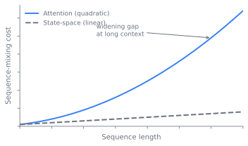

Beyond Dense Transformers: MoE, SSMs, Hybrids
The dense transformer of Chapter 7 runs every token through every parameter. That single contract hides two walls a frontier builder eventually hits, and this chapter is about the two ways the field has learned to break through them. One wall is in the feed-forward block: capacity and per-token compute are welded together, so the only way to know more is to compute more. The other is in attention: mixing every token with every other costs the square of the sequence length and leaves behind a key-value cache that grows without bound. A mixture-of-experts layer breaks the first wall by routing a token to a few of its many experts. A state-space model breaks the second by replacing attention's quadratic mixing with a linear recurrence. By the end a reader can explain why sparse models grow their parameter count almost for free, what the router has to get right for that bet to pay off, and where state-space and hybrid stacks sit as the live alternative to attention.
The two walls of the dense block
A dense feed-forward block runs every token through all of its parameters. That couples two things a frontier builder wants to separate: the model's capacity, how much it can know, and its per-token compute, how much each forward and backward step costs. Under that coupling, the only way to add knowledge is to add FLOPs, and FLOPs are the budget Chapter 4 spends. A model that wants more capacity than its compute budget can afford has no move inside the dense design. Call this the capacity wall.
The second wall is attention's own. Self-attention mixes every token with every other, so its cost grows with the square of sequence length, and the key-value cache it leaves behind grows linearly with context and dominates serving memory (Chapter 18). For long context that quadratic is the wall. The dense transformer therefore carries two separate inefficiencies: a feed-forward block that spends compute on capacity it may not need per token, and an attention block that spends compute and memory on a mixing pattern that may be denser than the task requires. The rest of this chapter takes the two walls in turn. MoE attacks the first; state-space models attack the second; hybrids decline to choose.
Breaking the capacity wall: mixture-of-experts
Decoupling parameters from FLOPs
The mixture-of-experts answer is to decouple parameters from active FLOPs. An MoE layer holds expert feed-forward networks but routes each token to only of them, with . The identity that matters: total parameters scale capacity and knowledge, while active parameters, the chosen experts plus the always-on parts of the model, scale per-token compute and step cost. Capacity becomes cheap relative to FLOPs, which is the whole frontier appeal. The same arithmetic cuts inference FLOPs too, though serving an MoE is its own problem and out of scope here. Figure 8.1 makes the split visible: as the expert count grows, total parameters climb while the active count that sets per-token FLOPs stays flat with fixed.

Sweep the expert count and watch total capacity climb while the active params that set per-token FLOPs stay almost flat.
import numpy as np, matplotlib.pyplot as plt
# MoE decouples total params (capacity) from active params (per-token FLOPs).
d, ffn = 4096, 14336 # hidden size and one expert's FFN width
k = 2 # experts fired per token
per_expert = 2 * d * ffn # up + down projection of one expert
N = np.arange(1, 65) # number of experts in the layer
total = N * per_expert # all experts are stored
active = k * per_expert + N * d # k fired experts + router map
plt.figure(figsize=(5, 3))
plt.plot(N, total / 1e9, label="total params (capacity)")
plt.plot(N, active / 1e9, label="active params (per-token FLOPs)")
plt.xlabel("experts N"); plt.ylabel("billions of params"); plt.legend()
plt.tight_layout(); plt.show()
print(f"N=64, k={k}: {total[-1]/1e9:.1f}B total but only {active[-1]/1e9:.2f}B active")
print(f"capacity-to-compute ratio: {total[-1]/active[-1]:.0f}x")
The new learned object is the router, also called the gate. It is a small linear map from a token's hidden state to one score per expert. A softmax or sigmoid turns scores into weights, the top- experts are selected, and their outputs are combined weighted by the renormalized gate values. In sketch form:
# router: a linear map h -> scores over N experts
scores = h @ W_gate # (tokens, N)
weights = softmax(scores) # or sigmoid per-expert
top = topk(weights, k) # indices and gate values
y = sum(g_i * Expert_i(h) for i, g_i in top)
This tiny map is the only genuinely new component, and it is the source of almost every MoE pathology. The whole rest of the design exists to keep the router in check. Figure 8.2 traces one token through the layer: the gate scores all experts, top- are selected and combined, while a shared expert (a later refinement) stays always-on in parallel.
flowchart TD h["Token hidden state h"] --> gate["Router W_gate<br/>scores over N experts"] gate --> sm["softmax / sigmoid<br/>then top-k select"] sm -->|"selected"| e1["Expert i<br/>(routed)"] sm -->|"selected"| e2["Expert j<br/>(routed)"] sm -.->|"not selected"| eN["Experts ...<br/>(idle, no FLOPs)"] h --> shared["Shared expert<br/>(always-on)"] e1 --> sum["Weighted sum<br/>by gate values"] e2 --> sum shared --> sum sum --> y["Output y"]
The router and its pathologies
The first thing the router gets wrong on its own is balance. Left alone, the gate collapses onto a few favored experts in a winner-take-all loop: an expert that is chosen gets more gradient, improves, and is chosen more, while the rest starve and become dead parameters. Two families of fix exist. The auxiliary load-balancing loss, from Shazeer et al. (2017) (Shazeer et al. 2017) and refined in GShard (Lepikhin et al. 2020) and Switch (Fedus et al. 2021), adds a penalty term on the product of the fraction of tokens routed to each expert and the gate mass placed on it, pushing the distribution toward uniform. It works, but it injects a loss whose weight trades balance against task quality. The newer answer, loss-free or bias-based balancing from DeepSeek-V3 (DeepSeek-AI 2024), drops the auxiliary loss entirely. Instead it keeps a per-expert routing bias, nudged up for under-used experts and down for over-used ones between steps, steering selection without adding an interfering gradient (Wang et al. 2024). That sidesteps the balance-versus-quality tension the auxiliary loss creates.
Two refinements change what an "expert" is. Fine-grained experts slice each expert into smaller ones and raise proportionally, so the same active FLOPs buy far more routing combinations and sharper specialization. Shared experts are a few that every token always passes through, absorbing the common, domain-general computation so the routed experts can specialize instead of each re-learning the basics. DeepSeekMoE combines both (Dai et al. 2024), and the pair is now a common default for large open MoE models.
One systems fact intrudes on this otherwise clean picture. Routing is dynamic, but hardware wants fixed-shape buffers, so each expert is given a capacity cap, roughly capacity_factor * (tokens / experts). Tokens routed to an over-full expert are dropped, passed through on the residual or rerouted to a second choice. The capacity factor is a direct knob: set it low and you save memory and communication but drop more tokens, losing compute and adding training noise; set it high and you waste padding on under-full experts.
How the layer reached this form
Sparse experts predate the transformer era as a general idea, but the line that matters here begins with Shazeer et al. (2017) (Shazeer et al. 2017), who introduced top- gating and the auxiliary balancing loss inside an LSTM language model. GShard (Lepikhin et al., 2020) (Lepikhin et al. 2020) carried the layer into the transformer and into automatic sharding across devices. Switch Transformers (Fedus et al., 2021) (Fedus et al. 2021) pushed to the cheapest possible router, , and to trillion-parameter scale, showing top-1 routing could train stably with the right tricks. GLaM (Du et al., 2022) (Du et al. 2022) made the efficiency case at scale, and Mixtral (Jiang et al., 2024) (Jiang et al. 2024) brought a strong open model into wide use.
Two threads then refined the layer. On routing, expert-choice (Zhou et al., 2022) (Zhou et al. 2022) inverted the question: instead of each token picking its experts, each expert picks its tokens, which makes per-expert load exact by construction and removes dropping, at the cost of some tokens getting no expert at all. BASE Layers (Lewis et al., 2021) (Lewis et al. 2021) framed routing as a balanced assignment problem outright. On specialization, DeepSeekMoE (Dai et al., 2024) (Dai et al. 2024) introduced fine-grained and shared experts, and DeepSeek-V3 (2024) (DeepSeek-AI 2024) replaced the auxiliary loss with bias-based balancing at frontier scale, with the standalone method documented separately by Wang et al. (2024) (Wang et al. 2024).
A parallel thread made MoE practical without paying for a from-scratch run. Sparse upcycling (Komatsuzaki et al., 2022) (Komatsuzaki et al. 2022) initializes each expert as a copy of a trained dense feed-forward block, adds a fresh router, and continues training; the experts diverge as routing specializes them. It buys strong quality for a fraction of from-scratch compute, with the failure mode that experts can stay near-identical if routing pressure is too weak, leaving MoE's cost without its benefit.
Stabilizing the router in practice
The router is the part to get right, and its instabilities have a specific cause. The top- selection is an argmax, and argmax is discontinuous: a small change in scores flips a token's expert, making the loss landscape jagged and spike-prone, worse in low precision. The standard mitigations are narrow and worth naming. The router z-loss from ST-MoE (Zoph et al., 2022) (Zoph et al. 2022) penalizes large router logits to keep the gate numerically well-behaved; note this is distinct from the output-logit z-loss in the stability kit of Chapter 4. Keeping the router in fp32 under a bf16 or fp8 body costs little and removes a class of spikes. And early routing decisions can lock in before experts have differentiated, so a run is worth watching for that in its first phase. MoE loss curves are spikier than dense curves at the same scale; an unguarded router, with no z-loss and bf16 logits, can spike and fail to recover days into a run.
The failure modes are worth naming because each bites at a different time. Routing collapse funnels most tokens to a few experts and leaves the rest dead; it is exactly what load balancing exists to prevent, and it returns if balance is mis-weighted or disabled. Load imbalance and token dropping, short of collapse, overflows some experts' capacity and silently discards their tokens' compute while adding noise, and it stalls the slowest expert's device, a systems cost paid in Chapter 9. Expert under-training leaves rarely-chosen experts too few tokens to specialize, the exact risk mode of upcycling when routing pressure is too weak.
When the bet pays off
- Sparse versus dense. MoE buys more capacity per training FLOP and per active FLOP, but pays in memory, since all experts are stored and sharded, in communication, since expert parallelism needs an all-to-all (Chapter 9), in fragility, and in a harder serving story. At small scale or under tight memory, dense wins. The crossover favors MoE as total scale grows.
- top-1 versus top-k. A router with is cheapest and simplest but more brittle and less expressive (Fedus et al. 2021); is the common sweet spot (Jiang et al. 2024); higher approaches dense cost and erodes the advantage.
- Capacity factor. Lower is cheaper but drops more tokens and adds noise; higher wastes padding. There is no single right value, and it is often raised at evaluation and inference, where dropping a token is unacceptable.
Breaking the context wall: state-space models
A fixed state instead of an addressable past
State-space models answer the other wall, attention's quadratic. An SSM maintains a fixed-size hidden state and updates it token by token through a linear recurrence, then reads an output from it:
Because the state is fixed in size, the cost is linear in sequence length and there is no growing key-value cache to serve, only a constant-size state. The price is that all of a token's past must be summarized into that fixed state, where attention keeps every past token addressable. The design question is whether a learned, input-dependent recurrence can compress the past well enough to compete. Mamba's contribution was to make the recurrence selective, letting , , and depend on the input so the model can choose what to keep and what to forget, recovering much of what content-based attention does while staying linear (Gu and Dao 2023).
From S4 to Mamba
The state-space line is younger as a serious attention competitor. The structured state-space model S4 (Gu et al., 2021) (Gu et al. 2021) showed a carefully parametrized linear recurrence could handle very long sequences, and Mamba (Gu and Dao, 2023) (Gu and Dao 2023) made the recurrence selective and hardware-efficient, bringing it within reach of language modeling at scale. Mamba-2 (Dao and Gu, 2024) (Dao and Gu 2024) tied state-space models back to attention through a duality that let them reuse attention's hardware.
The implementation reality is younger and thinner than the dense path. The recurrence needs a hardware-efficient scan to be fast, and the tooling around these models is less mature than the dense-transformer path, which is itself a reason the frontier has been slow to leave attention behind.
Recall is the catch
Attention keeps every past token exactly addressable and excels at precise recall, at quadratic cost and a growing key-value cache. An SSM is linear in length with a constant-size state, but must compress the past, and tends to lag attention on tasks that need exact long-range lookup. Figure 8.3 is the cost side of that trade: the two curves part ways as context grows, which is what makes the recall penalty worth paying at long context. Hybrids, the subject of the next section, exist precisely because neither pure form dominates.

Whether state-space and hybrid models should displace the dense attention transformer is not settled. The case for them is the linear cost and the constant-size state, which matter most at long context and at serving time. The case against is recall: pure SSMs still trail attention on tasks that need exact retrieval from far back in the sequence, which is why every strong long-context system so far keeps some full-attention layers rather than going pure-recurrent. How few attention layers a stack can keep, and whether a future selective recurrence closes the recall gap entirely, are open questions. Treat "attention is replaceable" as a live hypothesis the frontier is testing, not a settled result.
The serving layer reaches up and sets sequence-mixing design. The key-value cache footprint and the quadratic cost of attention at long context (Chapter 18) are what make a linear-cost, constant-state recurrence worth its recall penalty in the first place. A choice that looks like pure architecture, attention versus state-space, is driven by what inference will cost over the model's life, the same arrow that justified over-training in Chapter 4.
Neither alone: the hybrid stack
In practice the frontier does not choose one or the other. Hybrid stacks interleave a minority of full-attention layers with a majority of SSM or linear-recurrence layers, so a few global-mixing layers preserve exact recall while the linear layers carry the bulk of the sequence cheaply. MoE and SSM are also orthogonal: a hybrid can put its feed-forward blocks behind an MoE router and its sequence-mixing behind a state-space recurrence at the same time. Jamba (Lieber et al., 2024) (Lieber et al. 2024) interleaved Mamba and attention layers and added MoE on top, demonstrating that the three ideas compose into one stack. Figure 8.4 shows the three ideas composing: the sequence-mixing slot alternates SSM and attention, while the feed-forward slot is an MoE layer.
flowchart TD
in["Input sequence"] --> L1
subgraph block["Repeated block"]
L1["SSM layer<br/>(linear, cheap mixing)"] --> L2["SSM layer<br/>(linear, cheap mixing)"]
L2 --> L3["Attention layer<br/>(global, exact recall)"]
L3 --> L4["MoE feed-forward<br/>(routed experts)"]
end
L4 --> rep["...block repeats..."] --> out["Output"]The few attention layers in a hybrid still carry a key-value cache, so a hybrid does not escape attention's costs entirely; it pays them on a minority of layers instead of all of them. Figure 8.5 lays out the threads of this chapter as a genealogy: a routing line, a specialization line, the upcycling shortcut, and the separate state-space line, all converging on the hybrid stack.
Two trade-offs span the whole chapter and frame the rest of the book's view of these architectures.
- Attention versus state-space. Attention keeps every past token exactly addressable and excels at precise recall, at quadratic cost and a growing key-value cache. An SSM is linear in length with a constant-size state, but must compress the past, and tends to lag attention on tasks that need exact long-range lookup. Hybrids exist precisely because neither pure form dominates (Lieber et al. 2024).
- Train and serve complexity. Every choice here adds operational surface: a router to tune, balance to monitor, expert placement to lay out, and a memory and communication profile that Chapter 9 must absorb. The quality win is real but never free engineering.
Further reading
- Shazeer et al., “Outrageously Large Neural Networks: The Sparsely-Gated Mixture-of-Experts Layer” (Origin of top-k gating and the auxiliary balancing loss), 2017. arXiv:1701.06538
- Lepikhin et al., “GShard: Scaling Giant Models with Conditional Computation and Automatic Sharding,” 2020. arXiv:2006.16668
- Fedus et al., “Switch Transformers: Scaling to Trillion Parameter Models with Simple and Efficient Sparsity” (Top-1 routing at trillion-param scale), 2021. arXiv:2101.03961
- Du et al., “GLaM: Efficient Scaling of Language Models with Mixture-of-Experts,” 2022. arXiv:2112.06905
- Zhou et al., “Mixture-of-Experts with Expert Choice Routing” (Balance by construction), 2022. arXiv:2202.09368
- Zoph et al., “ST-MoE: Designing Stable and Transferable Sparse Expert Models” (Router z-loss, stability), 2022. arXiv:2202.08906
- Komatsuzaki et al., “Sparse Upcycling: Training Mixture-of-Experts from Dense Checkpoints,” 2022. arXiv:2212.05055
- Jiang et al., “Mixtral of Experts,” 2024. arXiv:2401.04088
- Dai et al., “DeepSeekMoE: Towards Ultimate Expert Specialization in Mixture-of-Experts Language Models” (Fine-grained + shared experts), 2024. arXiv:2401.06066
- DeepSeek-AI, “DeepSeek-V3 Technical Report” (Auxiliary-loss-free (bias-based) load balancing at scale), 2024. arXiv:2412.19437
- Lewis et al., “BASE Layers: Simplifying Training of Large, Sparse Models” (Routing as assignment, for contrast), 2021. arXiv:2103.16716
- Wang et al., “Auxiliary-Loss-Free Load Balancing Strategy for Mixture-of-Experts” (The standalone loss-free balancing method, distinct from the DeepSeek-V3 report), 2024. arXiv:2408.15664
- Gu et al., “Efficiently Modeling Long Sequences with Structured State Spaces” (S4), 2021. arXiv:2111.00396
- Gu & Dao, “Mamba: Linear-Time Sequence Modeling with Selective State Spaces,” 2023. arXiv:2312.00752
- Dao & Gu, “Transformers are SSMs: Generalized Models and Efficient Algorithms Through Structured State Space Duality” (Mamba-2), 2024. arXiv:2405.21060
- Lieber et al., “Jamba: A Hybrid Transformer-Mamba Language Model,” 2024. arXiv:2403.19887